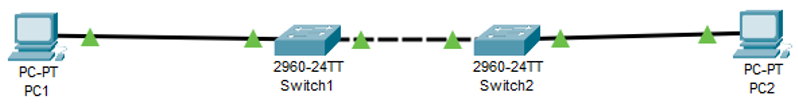

Fundamentals of Networking
Building your first network
As your first network lab you are going to look on performing basic configurations in network nodes and configuring a network. In detail you will be configure the switch management interface and implement basic connectivity between two user terminals. You are going to learn about basic but useful diagnostic commands for networking.

Figure 1: Basic Topology
Table 1 Addressing table.
| Device | IP Address | Subnet Mask |
|---|---|---|
| PC1 | 192.168.1.1 | 255.255.255.0 |
| PC2 | 192.168.1.2 | 255.255.255.0 |
| Switch 1 | 192.168.1.132 | 255.255.255.0 |
| Switch 2 | 192.168.1.133 | 255.255.255.0 |
Task 1 (Directed)
Open Packet Tracer and get familiar with packet tracer interface. From the device selection box try and find the PCs and the switches as shown in Figure 1 Basic topology. Place them in your workspace the white empty area where topologies are created and simulations are displayed.
Using the addressing table above we need to configure the PCs:
-
Click PC1, and then click the Desktop tab.
-
Click IP Configuration. In the Addressing Table above, you can see that the IP address for PC1 is
192.168.1.1and the subnet mask is255.255.255.0. Enter this information for PC1 in the IP Configuration window. -
Repeat steps 1 and 2 for PC2 remembering that PC 2 has an IP address of
192.168.1.2.
Let us test if the two PCs can communicate:
-
Click PC1. Close the IP Configuration window if it is still open. In the Desktop tab, click Command Prompt.
-
Type the ping command and the IP address for PC2, and press Enter. Packet Tracer PC Command Line 1.0 PC>
ping 192.168.1.2
Task 2 (Directed)
It is time to configure the switches:
-
Click Switch 1, and then click the CLI tab.
-
Enter privileged
EXECmode by entering the enable command. -
Examine the running configuration by running the
show running-configcommand. -
Enter config mode by running
configure terminalcommand. -
Change the host name to S1-GR by entering
hostname S1-GR. -
Run the
exitcommand to exit from the config mode.
You are now able to configure your switch. Usually, before configuring you would need to take some security measures, such as securing your console and securing the privilege mode access.
-
Run the following set of commands to secure your console:
S1-GR#configure terminal<OR>config t Enter configuration commands, one per line. End with CNTL/Z. S1-GR (config)#line console 0 S1-GR (config-line)#password <enter your name> S1-GR (config-line)#login S1-GR (config-line)#exit S1-GR (config)#exit %SYS-5-CONFIG_I: Configured from console by console S1-GR #Exit everything and verify that the password has been set up correctly.
-
Run the following set of command to secure privileged mode access:
-
Again, verify the privileged mode is secure.
-
Save configuration to NVRAM. To do this you would need to copy the running configuration to startup configuration:
-
Repeat Steps for S2.
-
Try and verify if there is communications between the PCs and any of the switches
Task 3 (Not Directed)
-
Configure S1 and S2 with an IP address.
-
Switches can be used as plug-and-play devices. This means that they do not need to be configured for them to work. Switches forward information from one port to another based on MAC addresses.
-
After answering 15, research and try to configure the
VLAN 1to have an IP address of192.168.1.132and192.168.1.133for S1-GR and S2-GR respectively. Do not forget to save configurations to NVRAM.-
Look at the following commands to do this:
Interfaceip addressno shutdown
-
Solution
S1# configure terminal Enter configuration commands, one per line. End with CNTL/Z. S1(config)# interface vlan 1 S1(config-if)# ip address 192.168.1.253 255.255.255.0 S1(config-if)# no shutdown %LINEPROTO-5-UPDOWN: Line protocol on Interface Vlan1, changed state to up S1(config-if)# S1(config-if)# exit S1#
-
-
Once you are confident that you have set it up verify your connections using ping command.
Task 4
-
Question:
-
Configure S2 with an IP address.
- Use the information in the Addressing Table to configure S2 with an IP address.
-
Verify the IP address configuration on S1 and S2.
-
Use the
show ip interface briefcommand to display the IP address and status of all the switch ports and interfaces. -
You can also use the
show running-configcommand.
-
-
Save configurations for S1 and S2 to NVRAM.
-
Question:
-
Verify network connectivity.
-
Network connectivity can be verified using the
pingcommand. -
It is very important that connectivity exists throughout the network.
-
Corrective action must be taken if there is a failure. Ping S1 and S2 from PC1 and PC2.
- Click PC1 and then click the Desktop tab.
- Click Command Prompt.
- Ping the IP address for PC2.
- Ping the IP address for S1.
- Ping the IP address for S2.
-
You can also use the ping command on the switch CLI and on PC2.
-
All pings should be successful.
-
If your first ping result is 80%, try again. It should now be 100%.
-
You will learn why a ping may sometimes fail the first time later in your studies.
-
If you are unable to ping any of the devices, recheck your configuration for errors.